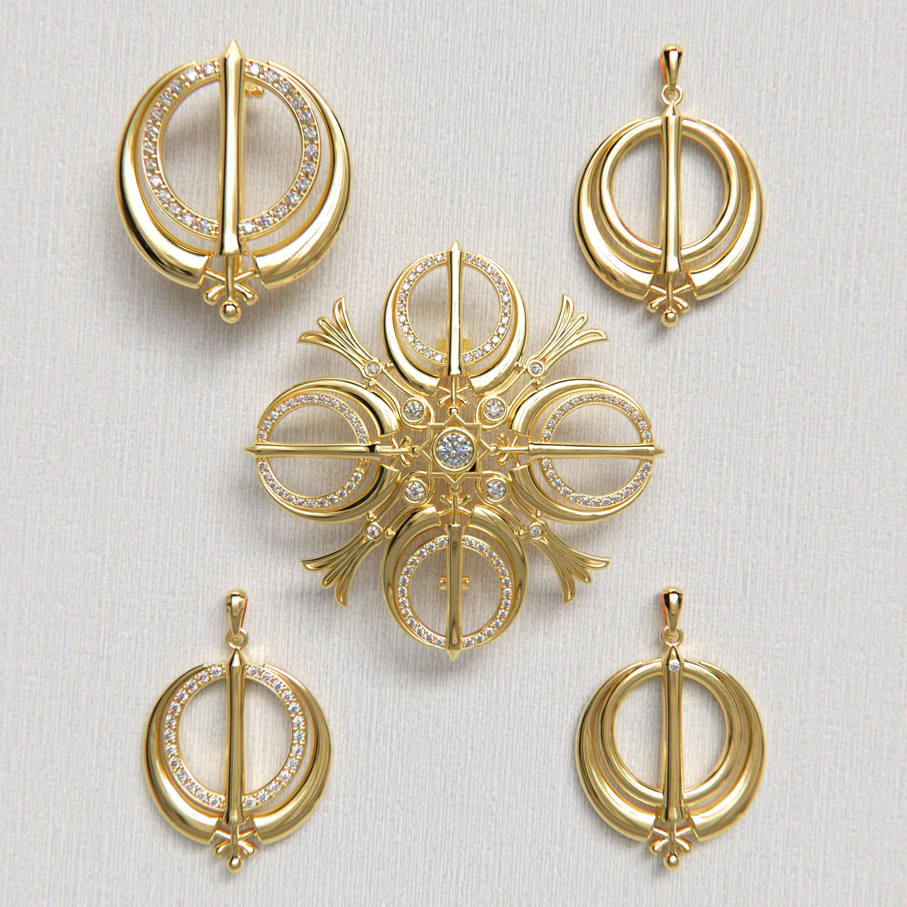
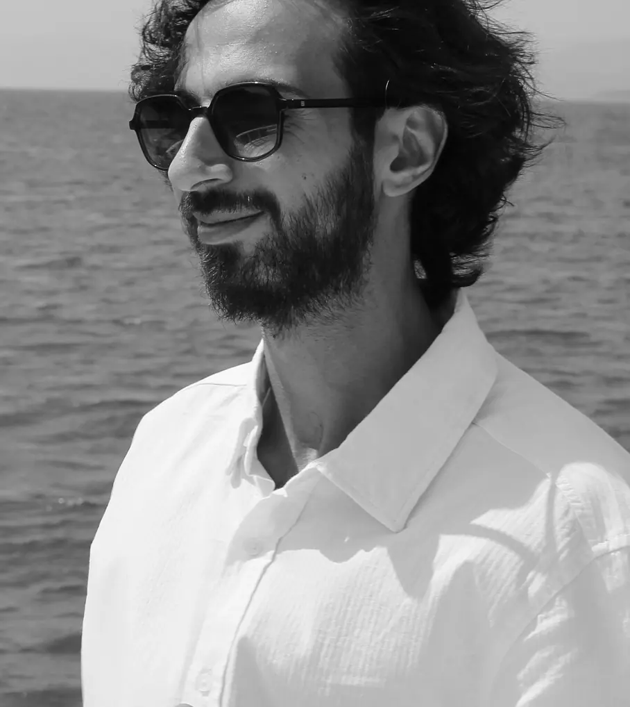

Comedy and Tragedy
A pair of theatre masks with a pin, followed from the 3D model to a render and on to the finished piece.
Jewelry designer · Fethiye, Türkiye
I turn sketches and ideas into production-ready 3D models and photorealistic renders, and can take them all the way to the finished piece.


About
I’m a jewelry designer with a close eye for detail. In every design I look for the balance between elegance and something new.
I have worked professionally since 2022 and trained in 3D jewelry design with MatrixGold at Istanbul Ticaret University. I also work as a production partner with a small jewelry atelier that puts quality before volume, so I can manage the whole development process, from concept and 3D modeling of custom pieces to full collection development for brands.
My work covers 3D jewelry design, careful rendering of finished projects and animation. I also use AI-assisted visualization to explore ideas faster and to show designs in their best light.
Process
Three pieces followed from the CAD model to the render and the finished jewelry, then smaller steps from other projects.
A pair of theatre masks with a pin, followed from the 3D model to a render and on to the finished piece.
A compass rose on the face and a world map around the shoulders: the model, a render of it, then the finished ring.
A light two-bar bangle with stones set at intervals, from the model to the piece in the hand and on the wrist.
A sun-ray motif from a reference image becomes an engraved signet ring set with a single diamond.
The finished emerald-cut ring model is placed in a lifestyle scene to show the design in context.
Asymmetric flame earrings, built in 3D and rendered in gold with diamonds.
A signet ring with a black stone, from the rendered design to the piece in the hand.
Selected work
A collection built on sacred-geometry motifs. I modeled each piece in 3D with pavé-set stones and rendered the set for presentation. The brooch is followed here from the CAD model through casting and polishing to the finished jewelry.
Presentation board and a close look at the finished brooch design.
Four-viewport models in MatrixGold and Rhino.
Photorealistic stills for presenting the set.
The brooch cast in raw gold, then cleaned up on the bench.
The jewelry itself, in boxes, on the bench and worn.
A dragon wrapped around the finger, with scaled texture, folded wings and a curled tail. The finished ring is shown on its display stand beside the renders and the print-ready model.
Motion
Short loops of rendered models, followed by clips from the screen and the bench.
Tools
AI helps me explore ideas and present finished designs. The jewelry itself is modeled in CAD.
Services
One-off pieces for private clients, from classic and minimal to highly detailed.
Clean, accurate models built to be made at the bench.
Parametric and freeform modeling, stone setting and pavé layouts.
Photorealistic stills and turntable animations of finished models.
Files prepared for printing, casting and manufacturing.
Collections for brands, from the first idea through production.
Adjusting a design so it casts, sets and finishes well.
For brands
You bring the idea and sell the piece. I handle everything in between, so each order goes straight from my bench to your customer.
From your sketch or reference to a production-ready model, with renders for approval.
Cast, set and finished in gold or silver with my partner atelier, a small workshop that puts quality before volume.
Photos and renders ready for your website, store listings and social media.
Each piece boxed and ready to reach your customer.
Paperwork and courier handled, shipped directly to your customer.
Experience and education
Custom pieces for private clients, from classic and minimal designs to highly detailed, technically complex work. Jewelry collections for brands, supported from the first idea through production.
Founded my own jewelry brand and designed its Nature (2023) and Sea (2024) collections, from first sketch to the finished, produced piece. Learned 3D modeling and production while running the brand.
72-hour certificate program in 3D jewelry design, completed with a Certificate of Achievement.
Gallery
Rings, pendants, earrings and men’s jewelry from the past few years. Select a piece to enlarge it.